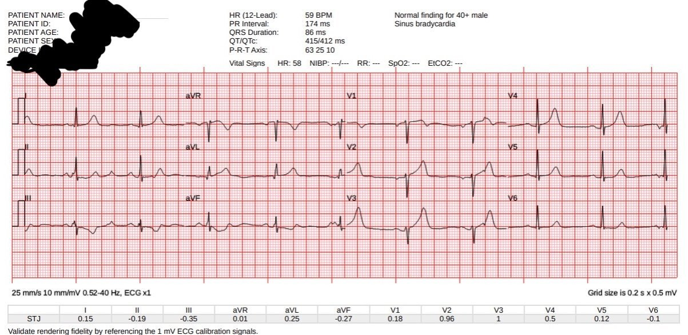
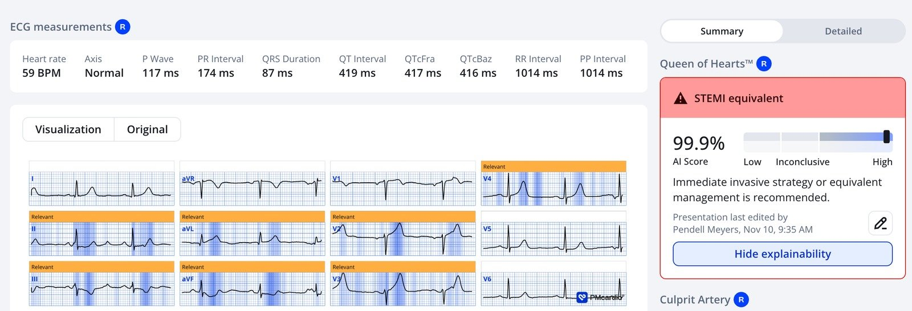
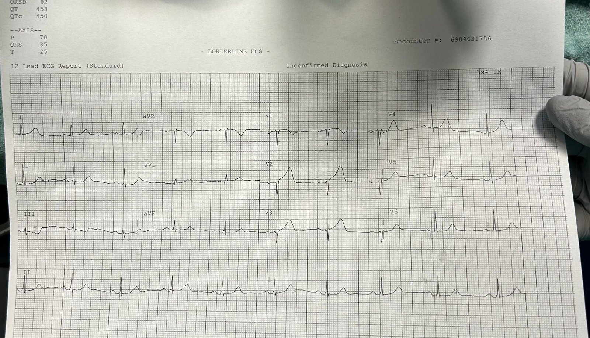
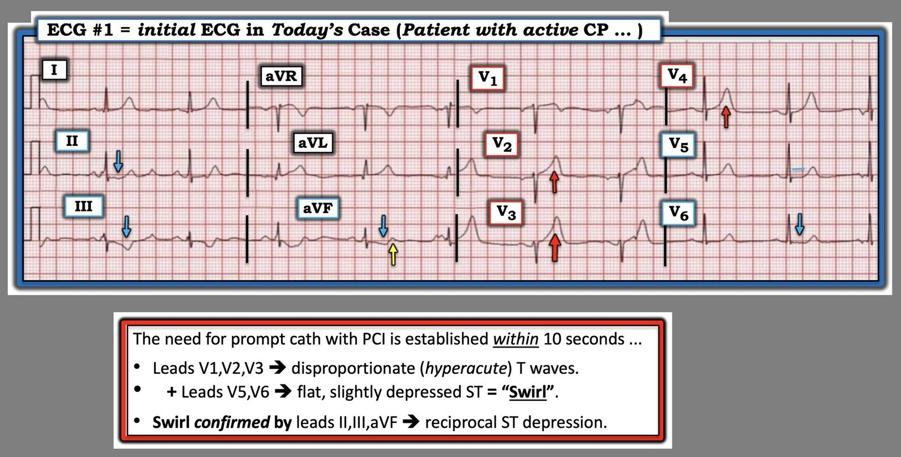

13/11/2026 — Một người đàn ông 40 mấy tuổi đau ngực và “kết quả bình thường” theo kết quả đọc bằng máy của đội cấp cứu ngoài viện
Bản dịch tiếng Việt của bài "A man in his 40s with chest pain and “normal findings” per EMS machine read" – Dr. Smith’s ECG Blog. Giữ nguyên toàn bộ 4 hình ảnh và 2 video của bản gốc.
Tác giả: Pendell Meyers, Smith biên tập.
Một người đàn ông 40 mấy tuổi gọi đội cấp cứu ngoài viện (EMS) vì đau ngực khởi phát cấp tính. Đội EMS đến nơi, ghi nhận dấu hiệu sinh tồn trong giới hạn bình thường, rồi ghi điện tâm đồ này trong lúc bệnh nhân đang đau ngực:


Bạn nghĩ gì?
Thuật toán của máy điện tâm đồ của EMS có nêu nhịp chậm xoang 59 lần/phút, nhưng ngoài ra gọi điện tâm đồ này là “bình thường.”
Tôi phản đối mạnh mẽ! Tôi nghĩ điện tâm đồ này có giá trị chẩn đoán ~100% tắc hoàn toàn cấp tính LAD. ST chênh lên (STE) do thiếu máu cục bộ ở V1-V3 (dưới tiêu chuẩn STEMI), sóng R kém ở các chuyển đạo đó, và sóng T tối cấp (HATW) ở V2, V3, V4, I, aVL. Hình ảnh xoáy trước tim (Precordial Swirl) được hoàn chỉnh bởi ST chênh xuống (STD) ở V6. ST chênh xuống soi gương và sóng T bị đè thấp ở III và aVF.
Smith: Một dấu hiệu rất đặc hiệu khác mà tôi luôn tìm khi băn khoăn về một sóng T tối cấp ở V2 là sóng T dạng xuống-lên (down-up) ở chuyển đạo III hoặc aVF. Quả nhiên, có sóng T dạng xuống-lên ở aVF.
Kết quả đọc của mô hình AI điện tâm đồ PMcardio Queen of Hearts (nay đã được FDA phê duyệt):


Queen đồng ý.
Báo động STEMI (Code STEMI) đã được kích hoạt, dù không có tiêu chuẩn STEMI (thật không thể tin nổi!)
Bác sĩ tim mạch “không ấn tượng” với điện tâm đồ này, nhưng đã không hủy phòng thông tim.
Một điện tâm đồ ghi lại đã được thực hiện:


Dễ hơn một chút, nhưng vẫn chưa đạt tiêu chuẩn STEMI.
Bác sĩ khoa cấp cứu (ED) đã ghi hình siêu âm tim này (mặt cắt trục ngắn cạnh ức), được diễn giải là rối loạn vận động thành trước:
Nếu nhóm điều trị chờ kết quả troponin đầu tiên, thì kết quả đó sẽ nằm trong giới hạn bình thường, ở mức 7 ng/L (troponin I độ nhạy cao, giới hạn trên tham chiếu (URL) <20 ở nam giới).
Nhưng họ đã không chờ, họ nhanh chóng đưa bệnh nhân đến phòng thông tim:
Bác sĩ tim mạch thực hiện thủ thuật ghi nhận tổn thương thủ phạm gây tắc hoàn toàn LAD và đã tiến hành can thiệp mạch vành qua da (PCI) với “kết quả chụp mạch rất tốt”.
Thời gian từ cửa đến bóng (door-to-balloon) dưới 60 phút!
Hai lần đo troponin tiếp theo đều lớn hơn 25.000 ng/L.
Siêu âm tim chính thức xác nhận rối loạn vận động thành.
Bệnh nhân diễn biến tốt trong đợt điều trị và đã được xuất viện.
Chẩn đoán ra viện nên là gì?
Không hề có tiêu chuẩn STEMI trên bất kỳ điện tâm đồ nào. Vậy mà vẫn được “điều trị như STEMI.” Thế nên, chẩn đoán cuối cùng: “STEMI.”
Smith: Chúng tôi đã chứng minh rằng chẩn đoán cuối cùng “STEMI” so với “NSTEMI” hầu như không liên quan gì đến việc có tiêu chuẩn STEMI tính theo milimét, thậm chí cũng không liên quan đến việc có tắc mạch hay không. Chẩn đoán STEMI so với NSTEMI của bác sĩ can thiệp tương quan chặt chẽ nhất với thời gian từ cửa đến bóng.
= = =
Những điểm cần học:
Đừng tin vào kết quả đọc của thuật toán máy điện tâm đồ quy ước. Hãy tự mình trở thành chuyên gia, hoặc dùng một mô hình AI đã được thẩm định và phê duyệt như Queen of Hearts, hoặc cả hai!
Bệnh tắc mạch vành cấp không được định nghĩa tốt bằng số milimét ST trên điện tâm đồ. Xin hãy là một bác sĩ thực thụ và cố tìm ra bệnh ngay cả khi trên điện tâm đồ nó không dễ thấy “rõ như ban ngày” (barn door).
Sóng T tối cấp là một mảnh ghép quan trọng giúp phát hiện OMI nhanh hơn so với chăm sóc tiêu chuẩn vào năm 2026.
- Ten (10) Examples of Hyperacute T-waves in Lead V2 (a few in V3), due to acute LAD occlusion (Mười (10) ví dụ về sóng T tối cấp ở chuyển đạo V2 (vài ví dụ ở V3), do tắc LAD cấp)
Smith: Tôi có 65 ca OMI trên blog này mà thuật toán quy ước nói điện tâm đồ hoàn toàn bình thường, nhưng tôi vẫn nhận ra đó là OMI (và quả thật đó là OMI). Chúng tôi đã thử nghiệm Queen of Hearts trên nhóm ca này. Cô ấy có độ nhạy 81% đối với OMI.
- Karim S…..Smith SW. Artificial Intelligence Detection of Occlusive Myocardial Infarction from Electrocardiograms Interpreted as “Normal” by Conventional Algorithms (Trí tuệ nhân tạo phát hiện nhồi máu cơ tim do tắc trên các điện tâm đồ được thuật toán quy ước đọc là “bình thường”)
- Meyers HP và cs.…..Smith SW. Hyperacute T Waves Are Specific for Occlusion Myocardial Infarction, Even Without Diagnostic ST-Segment Elevation (Sóng T tối cấp đặc hiệu cho nhồi máu cơ tim do tắc, ngay cả khi không có ST chênh lên đủ để chẩn đoán) (toàn văn)
Xem cách HATW giúp nhận diện tắc LAD (cũng như Smith và Queen):
- Meyers HP…..Smith SW. Failure of standard contemporary ST-elevation myocardial infarction electrocardiogram criteria to reliably identify acute occlusion of the left anterior descending coronary artery (Sự thất bại của các tiêu chuẩn điện tâm đồ nhồi máu cơ tim ST chênh lên chuẩn hiện hành trong việc nhận diện đáng tin cậy tình trạng tắc cấp động mạch liên thất trước). (cũng có toàn văn)
= = =
======================================
BÌNH LUẬN CỦA TÔI, bởi KEN GRAUER, MD (11/11/2026 ):
Ca hôm nay lẽ ra phải là một ca DỄ — vì đúng là tôi chỉ mất chưa đến 10 giây sau khi biết bệnh nhân này bị đau ngực (Chest Pain, CP) khởi phát cấp tính — để nhận ra rằng điện tâm đồ đầu tiên của ca hôm nay cho thấy:
- Sóng T tối cấp ở các chuyển đạo V1,V2,V3 + đoạn ST dẹt kèm chênh xuống nhẹ ở các chuyển đạo V5,V6 (Chỉ nên mất chưa đến 5 giây để thấy điều này … ).
- Và, có ST chênh xuống soi gương ở các chuyển đạo thành dưới (Chỉ nên mất thêm không quá 5 giây nữa để thấy điều này … ).
= = =
Phân tích chi tiết chưa đến 10 giây này …
Chúng tôi đã điểm lại rất nhiều ca “Xoáy“ trước tim (Precordial Swirl) trên Dr. Smith’s ECG Blog (Xem Bình luận của tôi ở cuối trang trong bài ngày 15 tháng Mười năm 2022 — để ôn lại các đặc điểm MẤU CHỐT giúp nhận ra kịp thời dấu hiệu Xoáy). Chẳng hề có phép màu nào trong việc đưa ra chẩn đoán trên. Đơn giản đó là “sự thật cho đến khi được chứng minh ngược lại”, như đã thấy trong vô số ca có bằng chứng thông tim xác nhận giá trị của nó.
- Đơn giản là không thể nào các sóng T ở chuyển đạo V2,V3,V4 trong Hình 1 lại “bình thường” ở một bệnh nhân đến khám vì đau ngực cấp . Thay vào đó — “con mắt” của chúng ta phải ngay lập tức bị thu hút bởi sóng T tăng lên rõ ràng một cách không tương xứng ở chuyển đạo V3, sóng T này có thể dễ dàng “nuốt” trọn phức bộ QRS bé nhỏ ở chuyển đạo này.
- Trong bối cảnh sóng T to lên không tương xứng như vậy ở chuyển đạo V3 — các sóng T ở các chuyển đạo lân cận V2 và V4 cũng to lên không tương xứng ( = quá “đầy đặn” (bulky) ==> tối cấp).
- Khi đó, chẩn đoán “Xoáy” (Swirl) cho đến khi được chứng minh ngược lại được xác lập nhờ đoạn ST dẹt kèm chênh xuống nhẹ ở các chuyển đạo V5,V6 ở thành bên ngực.
- Việc thấy bằng chứng rõ ràng của ST chênh xuống soi gương ở từng chuyển đạo thành dưới ( = các chuyển đạo II,III,aVF) ngay lập tức khẳng định kết luận của chúng ta rằng cần PCI cho đến khi được chứng minh ngược lại bằng thông tim kịp thời.
= = =
Những chi tiết tinh tế hơn trong CA hôm nay:
Có những chi tiết tinh tế hơn ở hầu như tất cả các chuyển đạo trên điện tâm đồ đầu tiên của ca hôm nay — nhưng như các độc giả thường xuyên của Dr. Smith’s ECG Blog có thể xác nhận — sự tự tin vào chẩn đoán Xoáy cho đến khi được chứng minh ngược lại cần phải đạt được trong vòng vài giây ở bệnh nhân đau ngực cấp này, chỉ đơn giản từ các dấu hiệu nêu trên. Vì mục đích giảng dạy — tôi sẽ bổ sung:
- Có tăng tiến sóng R kém ( = sóng r ban đầu rất nhỏ ở các chuyển đạo V1,V2,V3 — mà nếu đây là dấu hiệu mới — gợi ý mất các lực khử cực hướng ra trước do nhồi máu trước vách đang diễn ra).
- Như thường thấy với Xoáy — hình dạng ST-T ở chuyển đạo V1 không bình thường (Trong Hình 1 — đoạn ST ở chuyển đạo này thẳng đuỗn, chênh lên — và có phần cuối âm của sóng T dạng lên-xuống (up-down) ở chuyển đạo này). Việc biết rằng các chuyển đạo V2,V3,V4 là tối cấp giúp tôi dễ nhận ra rằng sóng ST-T ở chuyển đạo V1 cũng bất thường.
- Chuyển đạo V5 là một chuyển đạo “chuyển tiếp” thú vị — vì nó cho thấy dấu vết của tính tối cấp của sóng T (một sóng T đầy đặn hơn và “phình to” ở đỉnh hơn mức lẽ ra phải có) khi diễn ra sự chuyển tiếp từ các sóng T tối cấp ở các chuyển đạo thành trước sang hình ảnh ST dẹt và chênh xuống soi gương đặc trưng của Xoáy mà chúng ta thấy ở chuyển đạo V6.
- Như Dr. Smith đã nhấn mạnh — sóng T dạng xuống-lên “tố cáo” ở chuyển đạo aVF (mũi tên VÀNG) — khẳng định tính tối cấp của các sóng T thành trước. Dù bị nhiễu làm méo — nhiều khả năng cũng có một sóng T dạng xuống-lên khác ở chuyển đạo III.
- ST chênh xuống soi gương ở các chuyển đạo thành dưới còn được củng cố thêm ở chuyển đạo aVL (sóng T này ở aVL quá “đầy đặn” — và gần như là hình soi gương ngược lại của sóng T đảo ngược sâu ở chuyển đạo III).
- Chuyển đạo chi bên cao còn lại = chuyển đạo I — cũng cho thấy một sóng T tối cấp đầy đặn hơn mong đợi.
Điều cốt lõi: Bác sĩ tim mạch trong ca hôm nay “không ấn tượng” với điện tâm đồ đầu tiên của ca này — nhưng ít nhất anh/chị ấy đã không hủy kích hoạt phòng thông tim. Hy vọng trong tương lai bác sĩ tim mạch đó sẽ nhận ra rằng nhu cầu thông tim kịp thời trong những ca như thế này hiện ra rõ ràng chỉ trong vòng chưa đến 10 giây khi đã biết cần tìm gì.
= = =
Để rõ ràng, trong Hình 1 — tôi đã đánh dấu điện tâm đồ đầu tiên của ca hôm nay.


= = =
= = =